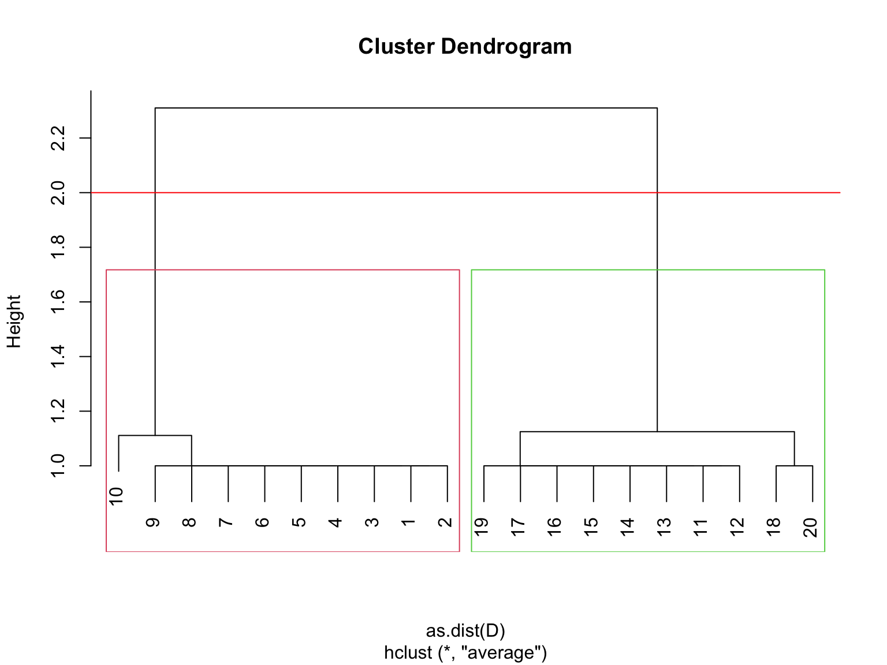

Network Concepts & Descriptives II
Social Network Analysis
Centrality
Definition
A measure of centrality is an index that assigns a numeric values to the nodes of the network. The higher the value, the more central the node.
“Being central” is a very ambiguous term hence there exists a large variety of indices that assess centrality with very different structural properties.

Standard Indices
Degree
Number of direct neighbors (“popularity”)
Closeness
Reciprocal of the sum of the length of the shortest paths
Betweenness
Number of shortest paths that pass through a node (“brokerage”)
Eigenvector
Being central means being connected to other central nodes
PageRank
Similar to eigenvector, just for directed networks
Degree
undirected networks
- direct contacts of an actor
- interpreted as opportunity to influence an be influenced directly
- friendship network ⇒ popularity
directed networks
- in-degree: popularity, prestige, trustworthiness
- out-degree: activity
Degree
can easily be calculated using row/column sums of adjacency matrix
Closeness
how close a node is to all other nodes?
- sum of shortest paths between the node and all other nodes
(sum of geodesic distances to all other nodes) - is an inverse measure of centrality
high values: short path to other nodes - directed networks
- closeness-in
- closeness-out
Closeness
Betweenness
how often a node lies along the shortest path between two other nodes?
index of potential for
- gatekeeping
- brokering
- controlling the flow
- connecting otherwise separate parts of the network
access to diversity of what flows
- potential for synthesizing
- directed networks: no issues, one score (no separate in and out scores)
Betweenness

Eigenvector
iterative version of degree centrality
node’s centrality is proportional to sum of centralities of those it has ties to
- node has high score if connected to nodes that are well connected
- better to be connected to 20 well connected individuals than to 50 people connected to no one else
- tends to identify centres of large well connected groups
- directed networks: does not work
Eigenvector
which node has the highest eigenvector centrality?
Eigenvector
which node has the highest eigenvector centrality?
PageRank
PageRank works by counting the number and quality of links to a page to determine a rough estimate of how important the website is. The underlying assumption is that more important websites are likely to receive more links from other websites.

PageRank
PageRank works by counting the number and quality of links to a page to determine a rough estimate of how important the website is. The underlying assumption is that more important websites are likely to receive more links from other websites.
Random surfer
A person following links at random PageRank is related to the probability of a random surfer ending up at a certain page.
Damping factor
At each step, the random surfer follows a link with probability \(d\) or jumps to an unconnected page with probability \(1-d\).
Empirically \(d\sim0.85\)
Toy example I
Toy example I
Implemented indices
igraph contains the following 10 indices:
- degree (
degree()) - weighted degree (
strength()) - betweenness (
betweenness()) - closeness (
closeness()) - eigenvector (
eigen_centrality()) - alpha centrality (
alpha_centrality()) - power centrality (
power_centrality()) - PageRank (
page_rank()) - eccentricity (
eccentricity()) - hubs and authorities (
authority_score()andhub_score()) - subgraph centrality (
subgraph_centrality())
Indices in the sna package
The sna package implements roughly the same indices but adds:
- flow betweenness (
flowbet()) - load centrality (
loadcent()) - Gil-Schmidt Power Index (
gilschmidt()) - information centrality (
infocent()) - stress centrality (
stresscent())
Centrality and Social Capital
In the context of efficiency, brokerage and social capital
two important and interrelated network theories:
The Strength of Weak Ties
Actors connected via strong ties are more likely in same social environment
The Strength of Weak Ties
Actors connected via strong ties are more likely in same social environment
connected to transitivity
The Strength of Weak Ties
- redundant information flows through the strong ties
- novel information flows through the weak ones
- bridging ties unlikely strong
- those with many weak ties have more social capital
Structural Holes
is concerned with ego networks:
networks that consist of a focal actor (the ego)
and the other actors directly connected to the ego (the alters) whilst also including the ties among the alters
the gap arising with an absent tie between two neighbors of an actor
Structural Holes
More structural holes
\(\implies\) more opportunities to gain novel information
\(\implies\) more social capital
Can be quantified by betweenness centrality for ego networks
Cohesive groups
Definition(s)
Cohesive subgroups are subsets of actors among whom there are relatively strong, direct, intense, frequent, or positive ties.
Methods that formalize the intuitive and theoretical notion of social group using social network properties

Cliques
A clique in a network is a set of nodes that form a complete subnetwork within a network (called a complete subgraph).
A maximal clique is a clique that cannot be extended to a bigger clique by addding more nodes to it.
Cliques
Maximal cliques can be calculated with max_cliques()
# only return cliques with three or more nodes
cl <- max_cliques(clique_graph,min = 3)
cl
#> [[1]]
#> + 3/30 vertices, from 0193e05:
#> [1] 9 17 18
#>
#> [[2]]
#> + 3/30 vertices, from 0193e05:
#> [1] 7 4 5
#>
#> [[3]]
#> + 3/30 vertices, from 0193e05:
#> [1] 7 4 8
#>
#> [[4]]
#> + 3/30 vertices, from 0193e05:
#> [1] 10 2 11
#>
#> [[5]]
#> + 3/30 vertices, from 0193e05:
#> [1] 16 12 15
#>
#> [[6]]
#> + 3/30 vertices, from 0193e05:
#> [1] 6 1 5
#>
#> [[7]]
#> + 4/30 vertices, from 0193e05:
#> [1] 12 13 15 14
#>
#> [[8]]
#> + 3/30 vertices, from 0193e05:
#> [1] 12 2 1
#>
#> [[9]]
#> + 5/30 vertices, from 0193e05:
#> [1] 1 2 5 4 3Cliques in
k-core decomposition
A k-core is a subgraph in which every node has at least k neighbors within the subgraph. A k-core is thus a relaxed version of a clique.
Clustering/Community detection
Minimum-cut method
cut graph into partitions which minimizes some metric
Hierarchical clustering
Agglomerative/Divisive methods to build a hierarchy of clusters
based on node similarity
Modularity Maximization
Modularity is defined as the fraction of edges that fall within given groups minus the expected fraction if edges were random
Statistical inference
stochastic blockmodeling based on generative models
Min Cut clustering
min_cut(g,value.only = FALSE)
#> $value
#> [1] 5
#>
#> $cut
#> + 5/92 edges from 89bbe6f (vertex names):
#> [1] 1--15 4--15 5--15 6--11 7--16
#>
#> $partition1
#> + 10/20 vertices, named, from 89bbe6f:
#> [1] 15 20 16 19 12 11 17 13 18 14
#>
#> $partition2
#> + 10/20 vertices, named, from 89bbe6f:
#> [1] 1 2 3 4 5 6 7 8 9 10Really only works in very obvious cases.
Hierarchical clustering
Clustering with igraph
- There is no agreed upon best method
- Modularity maximization is still widely considered “state-of-the-art”
- Generative models are, however, a strong contender
(not implemented in R yet)
ls("package:igraph",pattern = "cluster_")
#> [1] "cluster_edge_betweenness" "cluster_fast_greedy"
#> [3] "cluster_fluid_communities" "cluster_infomap"
#> [5] "cluster_label_prop" "cluster_leading_eigen"
#> [7] "cluster_leiden" "cluster_louvain"
#> [9] "cluster_optimal" "cluster_spinglass"
#> [11] "cluster_walktrap"Clustering workflow
Clustering workflow
# compute clustering
clu <- cluster_louvain(karate)
# cluster membership vector
mem <- membership(clu)
mem
#> [1] 1 1 1 1 2 2 2 1 3 1 2 1 1 1 3 3 2 1 3 1 3 1 3 4 4 4 3 4 4 3 3 4 3 3
# clusters as list
com <- communities(clu)
com
#> $`1`
#> [1] 1 2 3 4 8 10 12 13 14 18 20 22
#>
#> $`2`
#> [1] 5 6 7 11 17
#>
#> $`3`
#> [1] 9 15 16 19 21 23 27 30 31 33 34
#>
#> $`4`
#> [1] 24 25 26 28 29 32Clustering workflow
imc <- cluster_infomap(karate)
lec <- cluster_leading_eigen(karate)
loc <- cluster_louvain(karate)
sgc <- cluster_spinglass(karate)
wtc <- cluster_walktrap(karate)
scores <- c(infomap = modularity(karate,membership(imc)),
eigen = modularity(karate,membership(lec)),
louvain = modularity(karate,membership(loc)),
spinglass = modularity(karate,membership(sgc)),
walk = modularity(karate,membership(wtc)))
scores
#> infomap eigen louvain spinglass walk
#> 0.4020381 0.3934089 0.4197896 0.4197896 0.3532216Cluster workflow

Resolution limit
Resolution limit
clu_leiden <- cluster_leiden(K50,objective_function = "CPM",resolution_parameter = 0.5)
table(membership(clu_leiden))
#>
#> 1 2 3 4 5 6 7 8 9 10 11 12 13 14 15 16 17 18 19 20 21 22 23 24 25 26
#> 5 5 5 5 5 5 5 5 5 5 5 5 5 5 5 5 5 5 5 5 5 5 5 5 5 5
#> 27 28 29 30 31 32 33 34 35 36 37 38 39 40 41 42 43 44 45 46 47 48 49 50
#> 5 5 5 5 5 5 5 5 5 5 5 5 5 5 5 5 5 5 5 5 5 5 5 5Resolution limit
Core-Periphery
cohesive subgroups: dense groups sparsely connected to each other
core-periphery: dense core and a sparse, unconnected periphery
Discrete core-periphery model
Partition the adjacency matrix into core and periphery such that the number of edges are maximized in the core and the number of edges in the periphery are minimized
Core-Periphery in
Discrete model implemented in the package netUtils
library(netUtils)
data("core_graph")
core_periphery(core_graph)
#> $vec
#> [1] 1 1 1 1 1 1 1 1 1 1 1 1 1 1 1 1 1 1 1 1 0 0 0 0 0 0 0 0 0 0 0 0 0 0 0 0 0
#> [38] 0 0 0 0 0 0 0 0 0 0 0 0 0 0 0 0 0 0 0 0 0 0 0 0 0 0 0 0 0 0 0 0 0 0 0 0 0
#> [75] 0 0 0 0 0 0 0 0 0 0 0 0 0 0 0 0 0 0 0 0 0 0 0 0 0 0
#>
#> $corr
#> [1] 1
rgraph <- sample_gnp(100,0.2)
core_periphery(rgraph)
#> $vec
#> [1] 0 1 1 0 0 1 0 1 1 1 0 1 0 0 1 1 1 0 0 1 0 0 0 1 1 0 0 0 1 0 1 1 0 0 1 0 1
#> [38] 1 0 1 0 0 0 1 1 1 0 0 0 0 1 0 1 0 1 1 0 0 1 1 1 0 1 0 0 0 0 1 0 0 1 0 1 0
#> [75] 0 1 1 1 0 0 1 1 1 0 0 0 0 0 1 0 1 0 1 1 0 1 0 1 0 1
#>
#> $corr
#> [1] 0.1466399higher corr ⇒ better fit with an idealized core-periphery structure
Network Positions and Social Roles
The Duality of Position and Roles
- find actors that have similar patterns of ties
- these actors have the same structural positions
- analyse if actors in same positions have certain roles
The Position Approach
How similar are two nodes in terms of patterns of connectivity with others?
Partition the nodes into so called equivalence or similarity classes
- structural equivalence
- regular equivalence
- structural similarity
Nodes in same equivalence class occupy the same position in the network
Structural Equivalence
Actors are structurally equivalent
if they have the same ties
to the same other actorsif completely substitutable
equivalence classes with more than one actor
Regular Equivalence
Actors are regularly equivalent
- if they are equally related to equivalent others (less strict)
Structural Similarity
In most real-world applications, the standard definition of structural equivalence is much too strong.
We need a measure of position that allows for “more or less” rather than “yes” and “no.”
This is what is called structurally similarity
Two nodes are structurally similar if they have similar patterns of connectivity with the same others.
Blockmodeling
Outline the structural neighborhood pattern of actors
- use adjacency and distance matrices
- permute so that equivalent actors are next to each other
- grouping of the actors represented as blocks
Decide on a rule which governs the assignment of a zero or one to the relational tie between positions in the model
- 1-blocks
- 0-blocks
- or approximation
Blockmodeling
Image matrix
- cells in the blocks of the adjacency matrix reduced to single cells
- 1-blocks/0-blocks (or approximation)
Reduced graph
- blocks as nodes
- 1-blocks are ties between nodes
Check for certain structural patterns based on the partitioning
(core-periphery, cohesive subgroups or factions, group brokerage, etc)
Blockmodels: Cohesive Subgroups
image matrix
reduced graph
Blockmodels: Core-Periphery

image matrix
reduced graph
Example
The Correlation Distance
Compares the row (or column) vectors of nodes in a graph and returns a number between -1 and +1
Ex. Structural equivalence:
Pairs of structurally equivalent nodes get a +1
- structurally similar get positive values
Nodes that are completely different from one another (that is connect to completely disjoint sets of neighbors) get a -1
- structurally dissimilar get negative values
Nodes that have an even combination of similarities and differences in their pattern of connectivity to others get a number close to zero
The Correlation Distance
The correlation distance between two nodes \(k\) and \(l\): \[
d^{\text{corr}}_{k,l} = \frac{\sum_j \left( a_{(k)j} - \bar{a}_{(k)j} \right) \left( a_{(l)j} - \bar{a}_{(l)j} \right)}
{\sqrt{ \sum_j \left( a_{(k)j} - \bar{a}_{(k)j} \right)^2 \sum_j \left( a_{(l)j} - \bar{a}_{(l)j} \right)^2 }}
\] \(a_{(k)j}\) is the row (or column) vector for node \(k\) in the adjacency matrix
\(a_{(l)j}\) is the row (or column) vector for node \(l\) in the adjacency matrix
and \[\bar{a}_{(k)j} = \frac{\sum_j a_{kj}}{N}\]
Example: Structural Equivalence
| A | B | C | D | E | F | |
|---|---|---|---|---|---|---|
| A | 0 | 0 | 1 | 1 | 0 | 0 |
| B | 0 | 0 | 1 | 1 | 0 | 0 |
| C | 1 | 1 | 0 | 0 | 1 | 0 |
| D | 1 | 1 | 0 | 0 | 1 | 0 |
| E | 0 | 0 | 1 | 1 | 0 | 1 |
| F | 0 | 0 | 0 | 0 | 1 | 0 |
Example: Structural Equivalence
Let’s look at the row vector for node A
| 0 | 0 | 1 | 1 | 0 | 0 |
\[ \implies \sum_i a_{(A)j} = 0 + 0 + 1 + 1 + 0 + 0 = 2 \]
And we know that \(N = 6\), so row mean is
\[ \overline{a}_{(A)j} = \frac{\sum_i a_{Aj}}{N} = \frac{2}{6}=0.33 \]
Example: Structural Equivalence
Vector of row entries minus the row mean:
| (0 - 0.33) | (0 - 0.33) | (1 - 0.33) | (1 - 0.33) | (0 - 0.33) | (0 - 0.33) |
Result of subtracting row mean from row entries:
| -0.33 | -0.33 | 0.67 | 0.67 | -0.33 | -0.33 |
Which implies: \[ \sum_j (a_{(A)j} - \overline{a}_{(A)j}) = -0.33 -0.33 + 0.67 + 0.67 -0.33 -0.33 = 0.02 \]
similarly compute the rest…
Example: Structural Equivalence
When we do that for each pair of nodes in the example, we end up with the structural similarity matrix:
| A | B | C | D | E | F | |
|---|---|---|---|---|---|---|
| A | – | 1 | -0.66 | -0.66 | 0.71 | -0.32 |
| B | 1 | – | -0.66 | -0.66 | 0.71 | -0.32 |
| C | -0.66 | -0.66 | – | 1 | -0.93 | 0.08 |
| D | -0.66 | -0.66 | 1 | – | -0.93 | 0.08 |
| E | 0.71 | 0.71 | -0.93 | -0.93 | – | -0.45 |
| F | -0.32 | -0.32 | 0.08 | 0.08 | -0.45 | – |
CONCOR
(CONvergence of iterated CORrelations)
what of we want to find the correlation distance of a correlation distance matrix?
CONCOR
second iteration
| A | B | C | D | E | F | |
|---|---|---|---|---|---|---|
| A | – | 1 | -0.94 | -0.94 | 0.97 | -0.65 |
| B | 1 | – | -0.94 | -0.94 | 0.97 | -0.65 |
| C | -0.94 | -0.94 | – | 1 | -0.98 | 0.47 |
| D | -0.94 | -0.94 | 1 | – | -0.98 | 0.47 |
| E | 0.97 | 0.97 | -0.98 | -0.98 | – | -0.64 |
| F | -0.65 | -0.65 | 0.47 | 0.47 | -0.64 | – |
CONCOR
third iteration
| A | B | C | D | E | F | |
|---|---|---|---|---|---|---|
| A | – | 1 | -1 | -1 | 1 | -0.93 |
| B | 1 | – | -1 | -1 | 1 | -0.93 |
| C | -1 | -1 | – | 1 | -1 | 0.89 |
| D | -1 | -1 | 1 | – | -1 | 0.89 |
| E | 1 | 1 | -1 | -1 | – | -0.93 |
| F | -0.93 | -0.93 | 0.89 | 0.89 | -0.93 | – |
CONCOR
forth iteration
| A | B | C | D | E | F | |
|---|---|---|---|---|---|---|
| A | – | 1 | -1 | -1 | 1 | -1 |
| B | 1 | – | -1 | -1 | 1 | -1 |
| C | -1 | -1 | – | 1 | -1 | 1 |
| D | -1 | -1 | 1 | – | -1 | 1 |
| E | 1 | 1 | -1 | -1 | – | -1 |
| F | -1 | -1 | 1 | 1 | -1 | – |
CONCOR
structurally equivalent nodes have exactly the same pattern of +1 and -1 across rows
| A | B | C | D | E | F | |
|---|---|---|---|---|---|---|
| A | -- | 1 | -1 | -1 | 1 | -1 |
| B | 1 | -- | -1 | -1 | 1 | -1 |
| C | -1 | -1 | -- | 1 | -1 | 1 |
| D | -1 | -1 | 1 | -- | -1 | 1 |
| E | 1 | 1 | -1 | -1 | -- | -1 |
| F | -1 | -1 | 1 | 1 | -1 | -- |
(Breiger, Boorman, and Arabie 1975)